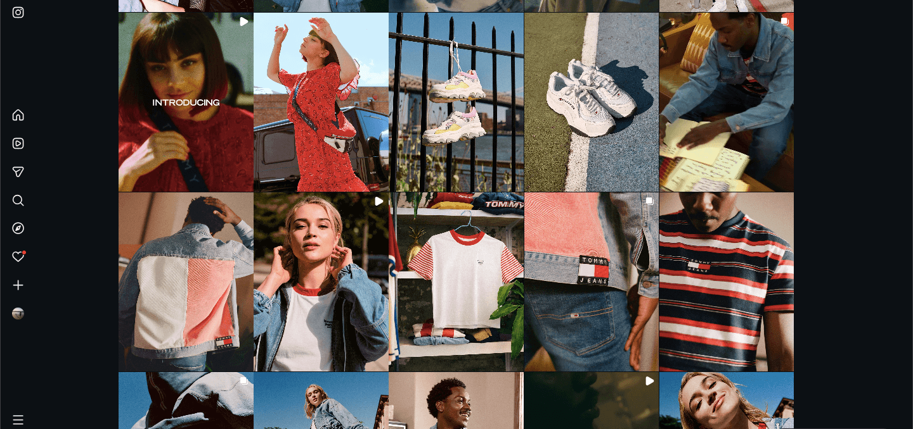

Tommy Jeans have always had a strong relationship with music. It's a cultural identity, a heritage. But as a sub-brand of Tommy Hilfiger, it risked being overshadowed rather than having its own distinct presence in the market. Competing for the attention of Gen Z and millennial consumers meant more than just casting the right faces; it required content built around music, self-expression, and unfiltered authenticity.
The Spring 2020 moment was also a pivotal one: the brand was launching a dedicated Instagram channel (@TommyJeans) and needed a campaign strong enough to establish it as a destination in its own right, from day one.
The campaign adopted Tommy Jeans' musical heritage, celebrating the passion and momentum of the next generation of emerging talents. We casted six ambassadors (Charli XCX, Channel Tres, Lolo Zouaï, VAVA, Xiuhtezcatl Martinez and Omar Apollo) each known for breaking boundaries and expressing themselves openly, a mix of genres, backgrounds, and fanbases. The campaign included exclusive interviews with Charli XCX and the other artists, with the @TommyJeans Instagram account designed to offer innovative content around the clock.
As co-producer on the campaign, I managed a dedicated team responsible for capturing all behind-the-scenes and social content during production. Working in close collaboration with Tommy Hilfiger's marketing department, we ensured the BTS footage landed with the timing, format, and energy needed to fuel the launch of the new @TommyJeans Instagram channel, building a content bank that gave the account immediate momentum.

The launch of @TommyJeans gave the brand a dedicated platform to speak directly to a Gen Z audience without the filter of the parent brand, a meaningful shift in how Tommy Hilfiger engaged with younger consumers. The #TuneIn campaign was covered across international fashion and culture media.
The casting of Charli XCX proved to be an especially forward-thinking call. In the years following the campaign, she became one of the most commercially effective brand ambassadors in fashion, with later partnerships generating millions of dollars in media value and sell-through rates that outpaced industry benchmarks across multiple brands. Tommy Jeans was early to that relationship.